Sequnce Modeling: Recurrent and Recursive Nets¶

Recurrent neural networks, or RNNs (Rumelhart et al., 1986a), are a family of neural networks for processing sequential data.
Much as a convolutional network is a neural network that is specialized for processing a grid of values $X$ such as an image, a recurrent neural network is a neural network that is specialized for processing a sequence of values $x^{(1)}$, … , $x^{(τ)}$.
Most recurrent networks can also process sequences of variable length.
RNN Applications: series of data
Time series prediction
Language modeling (text generation)
Text sentiment analysis
Named entity recognition
Translation
Speech recognition
Anomaly detection in time series
Music composition
…


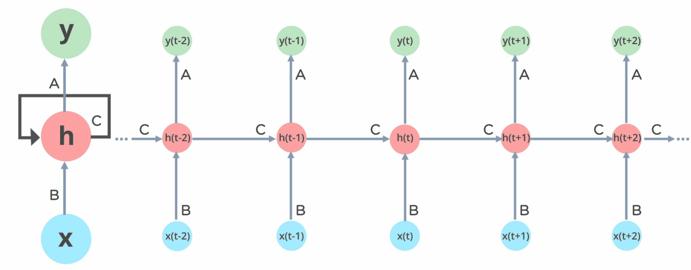

http://karpathy.github.io/2015/05/21/rnn-effectiveness/
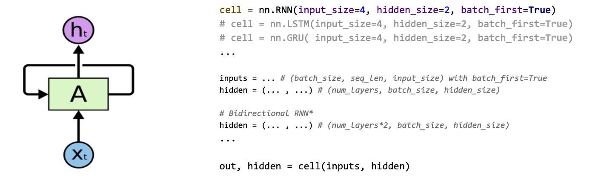

RNN in a Nutshell¶
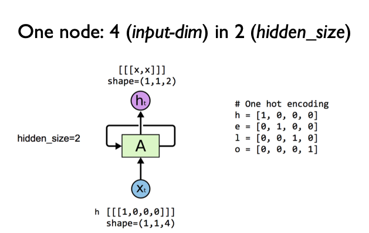
import torch
import torch.nn as nn
from torch.autograd import Variable
# One hot encoding for each char in 'hello'
h = [1, 0, 0, 0]
e = [0, 1, 0, 0]
l = [0, 0, 1, 0]
o = [0, 0, 0, 1]
# One cell RNN input_dim (4) -> output_dim (2). sequence: 5
cell = nn.RNN(input_size=4, hidden_size=2, batch_first=True)
# (num_layers * num_directions, batch, hidden_size) whether batch_first=True or False
hidden = Variable(torch.randn(1, 1, 2))
# Propagate input through RNN
# Input: (batch, seq_len, input_size) when batch_first=True
inputs = Variable(torch.Tensor([h, e, l, l, o]))
# Propagate input through RNN
# Input: (batch, seq_len, input_size) when batch_first=True
inputs = inputs.view(1, 5, -1)
out, hidden = cell(inputs, hidden)
print("sequence input size", inputs.size(), "out size", out.size())
sequence input size torch.Size([1, 5, 4]) out size torch.Size([1, 5, 2])
# One cell RNN input_dim (4) -> output_dim (2). sequence: 5, batch 3
# 3 batches 'hello', 'eolll', 'lleel'
# rank = (3, 5, 4)
inputs = Variable(torch.Tensor([[h, e, l, l, o],
[e, o, l, l, l],
[l, l, e, e, l]]))
# hidden : (num_layers * num_directions, batch, hidden_size) whether batch_first=True or False
hidden = Variable(torch.randn(1, 3, 2))
# Propagate input through RNN
# Input: (batch, seq_len, input_size) when batch_first=True
# B x S x I
out, hidden = cell(inputs, hidden)
print("batch input size", inputs.size(), "out size", out.size())
batch input size torch.Size([3, 5, 4]) out size torch.Size([3, 5, 2])
inputs
tensor([[[1., 0., 0., 0.],
[0., 1., 0., 0.],
[0., 0., 1., 0.],
[0., 0., 1., 0.],
[0., 0., 0., 1.]],
[[0., 1., 0., 0.],
[0., 0., 0., 1.],
[0., 0., 1., 0.],
[0., 0., 1., 0.],
[0., 0., 1., 0.]],
[[0., 0., 1., 0.],
[0., 0., 1., 0.],
[0., 1., 0., 0.],
[0., 1., 0., 0.],
[0., 0., 1., 0.]]])
hidden
tensor([[[-0.6094, -0.5195],
[-0.3507, -0.3204],
[-0.3608, -0.0211]]], grad_fn=<StackBackward>)
out
tensor([[[-0.3839, -0.2360],
[-0.6938, 0.0357],
[-0.3971, -0.0806],
[-0.3233, -0.2799],
[-0.6094, -0.5195]],
[[-0.7402, -0.3336],
[-0.7111, -0.3068],
[-0.4820, -0.1196],
[-0.3631, -0.2346],
[-0.3507, -0.3204]],
[[ 0.0085, -0.1466],
[-0.1904, -0.5055],
[-0.6940, -0.1271],
[-0.7386, 0.2450],
[-0.3608, -0.0211]]], grad_fn=<TransposeBackward1>)

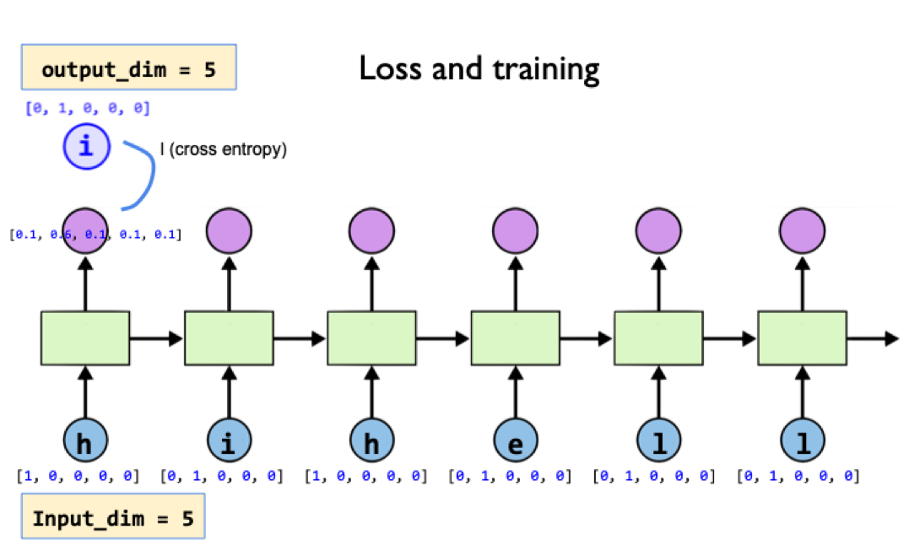

import sys
import torch
import torch.nn as nn
from torch.autograd import Variable
torch.manual_seed(777) # reproducibility
# 0 1 2 3 4
idx2char = ['h', 'i', 'e', 'l', 'o']
# Teach hihell -> ihello
x_data = [0, 1, 0, 2, 3, 3] # hihell
one_hot_lookup = [[1, 0, 0, 0, 0], # 0
[0, 1, 0, 0, 0], # 1
[0, 0, 1, 0, 0], # 2
[0, 0, 0, 1, 0], # 3
[0, 0, 0, 0, 1]] # 4
y_data = [1, 0, 2, 3, 3, 4] # ihello
x_one_hot = [one_hot_lookup[x] for x in x_data]
# As we have one batch of samples, we will change them to variables only once
inputs = Variable(torch.Tensor(x_one_hot))
labels = Variable(torch.LongTensor(y_data))
num_classes = 5
input_size = 5 # one-hot size
hidden_size = 5 # output from the RNN. 5 to directly predict one-hot
batch_size = 1 # one sentence
sequence_length = 1 #Note: One by one
num_layers = 1 # one-layer rnn
labels
tensor([1, 0, 2, 3, 3, 4])
class Model(nn.Module):
def __init__(self):
super(Model, self).__init__()
self.rnn = nn.RNN(input_size=input_size,
hidden_size=hidden_size, batch_first=True)
def forward(self, hidden, x):
# Reshape input (batch first)
x = x.view(batch_size, sequence_length, input_size)
# Propagate input through RNN
# Input: (batch, seq_len, input_size)
# hidden: (num_layers * num_directions, batch, hidden_size)
out, hidden = self.rnn(x, hidden)
return hidden, out.view(-1, num_classes)
def init_hidden(self):
# Initialize hidden and cell states
# (num_layers * num_directions, batch, hidden_size)
return Variable(torch.zeros(num_layers, batch_size, hidden_size))
# Instantiate RNN model
model = Model()
print(model)
# Set loss and optimizer function
# CrossEntropyLoss = LogSoftmax + NLLLoss
criterion = nn.CrossEntropyLoss()
optimizer = torch.optim.Adam(model.parameters(), lr=0.1)
Model(
(rnn): RNN(5, 5, batch_first=True)
)
# Train the model
for epoch in range(100):
optimizer.zero_grad()
loss = 0
hidden = model.init_hidden()
sys.stdout.write("predicted string: ")
for input, label in zip(inputs, labels):
# print(input.size(), label.size())
hidden, output = model(hidden, input)
val, idx = output.max(1)
sys.stdout.write(idx2char[idx.data[0]])
#label_one_hot = one_hot_lookup[label]
loss += criterion(output, label.view(-1))
print(", epoch: %d, loss: %1.3f" % (epoch + 1, loss.item()))
loss.backward()
optimizer.step()
print("Learning finished!")
predicted string: llllll, epoch: 1, loss: 10.155
predicted string: llllll, epoch: 2, loss: 9.137
predicted string: llllll, epoch: 3, loss: 8.355
predicted string: llllll, epoch: 4, loss: 7.577
predicted string: llllll, epoch: 5, loss: 6.876
predicted string: lhelll, epoch: 6, loss: 6.327
predicted string: ihelll, epoch: 7, loss: 6.014
predicted string: ihelll, epoch: 8, loss: 5.787
predicted string: ihelll, epoch: 9, loss: 5.477
predicted string: ihelll, epoch: 10, loss: 5.274
predicted string: ihelll, epoch: 11, loss: 5.041
predicted string: ihello, epoch: 12, loss: 4.827
predicted string: ihello, epoch: 13, loss: 4.676
predicted string: ihello, epoch: 14, loss: 4.550
predicted string: ihello, epoch: 15, loss: 4.430
predicted string: ihello, epoch: 16, loss: 4.305
predicted string: ihello, epoch: 17, loss: 4.164
predicted string: ihelll, epoch: 18, loss: 4.003
predicted string: ihelll, epoch: 19, loss: 3.860
predicted string: ihelll, epoch: 20, loss: 3.879
predicted string: ihelll, epoch: 21, loss: 3.768
predicted string: ihelll, epoch: 22, loss: 3.642
predicted string: ihelll, epoch: 23, loss: 3.599
predicted string: ihello, epoch: 24, loss: 3.577
predicted string: ihello, epoch: 25, loss: 3.544
predicted string: ihello, epoch: 26, loss: 3.498
predicted string: ihello, epoch: 27, loss: 3.439
predicted string: ihello, epoch: 28, loss: 3.371
predicted string: ihello, epoch: 29, loss: 3.303
predicted string: ihello, epoch: 30, loss: 3.240
predicted string: ihello, epoch: 31, loss: 3.162
predicted string: ihello, epoch: 32, loss: 3.147
predicted string: ihello, epoch: 33, loss: 3.178
predicted string: ihello, epoch: 34, loss: 3.116
predicted string: ihello, epoch: 35, loss: 3.042
predicted string: ihello, epoch: 36, loss: 3.020
predicted string: ihello, epoch: 37, loss: 3.015
predicted string: ihello, epoch: 38, loss: 2.998
predicted string: ihello, epoch: 39, loss: 2.977
predicted string: ihello, epoch: 40, loss: 2.966
predicted string: ihello, epoch: 41, loss: 2.961
predicted string: ihello, epoch: 42, loss: 2.950
predicted string: ihello, epoch: 43, loss: 2.930
predicted string: ihello, epoch: 44, loss: 2.904
predicted string: ihello, epoch: 45, loss: 2.888
predicted string: ihello, epoch: 46, loss: 2.888
predicted string: ihello, epoch: 47, loss: 2.879
predicted string: ihello, epoch: 48, loss: 2.860
predicted string: ihello, epoch: 49, loss: 2.857
predicted string: ihello, epoch: 50, loss: 2.859
predicted string: ihello, epoch: 51, loss: 2.852
predicted string: ihello, epoch: 52, loss: 2.840
predicted string: ihello, epoch: 53, loss: 2.834
predicted string: ihello, epoch: 54, loss: 2.834
predicted string: ihello, epoch: 55, loss: 2.824
predicted string: ihello, epoch: 56, loss: 2.817
predicted string: ihello, epoch: 57, loss: 2.817
predicted string: ihello, epoch: 58, loss: 2.814
predicted string: ihello, epoch: 59, loss: 2.808
predicted string: ihello, epoch: 60, loss: 2.805
predicted string: ihello, epoch: 61, loss: 2.805
predicted string: ihello, epoch: 62, loss: 2.801
predicted string: ihello, epoch: 63, loss: 2.796
predicted string: ihello, epoch: 64, loss: 2.795
predicted string: ihello, epoch: 65, loss: 2.793
predicted string: ihello, epoch: 66, loss: 2.789
predicted string: ihello, epoch: 67, loss: 2.786
predicted string: ihello, epoch: 68, loss: 2.786
predicted string: ihello, epoch: 69, loss: 2.783
predicted string: ihello, epoch: 70, loss: 2.780
predicted string: ihello, epoch: 71, loss: 2.780
predicted string: ihello, epoch: 72, loss: 2.778
predicted string: ihello, epoch: 73, loss: 2.776
predicted string: ihello, epoch: 74, loss: 2.775
predicted string: ihello, epoch: 75, loss: 2.774
predicted string: ihello, epoch: 76, loss: 2.772
predicted string: ihello, epoch: 77, loss: 2.770
predicted string: ihello, epoch: 78, loss: 2.769
predicted string: ihello, epoch: 79, loss: 2.768
predicted string: ihello, epoch: 80, loss: 2.766
predicted string: ihello, epoch: 81, loss: 2.765
predicted string: ihello, epoch: 82, loss: 2.764
predicted string: ihello, epoch: 83, loss: 2.763
predicted string: ihello, epoch: 84, loss: 2.762
predicted string: ihello, epoch: 85, loss: 2.761
predicted string: ihello, epoch: 86, loss: 2.759
predicted string: ihello, epoch: 87, loss: 2.759
predicted string: ihello, epoch: 88, loss: 2.758
predicted string: ihello, epoch: 89, loss: 2.757
predicted string: ihello, epoch: 90, loss: 2.756
predicted string: ihello, epoch: 91, loss: 2.755
predicted string: ihello, epoch: 92, loss: 2.754
predicted string: ihello, epoch: 93, loss: 2.753
predicted string: ihello, epoch: 94, loss: 2.752
predicted string: ihello, epoch: 95, loss: 2.751
predicted string: ihello, epoch: 96, loss: 2.750
predicted string: ihello, epoch: 97, loss: 2.750
predicted string: ihello, epoch: 98, loss: 2.749
predicted string: ihello, epoch: 99, loss: 2.748
predicted string: ihello, epoch: 100, loss: 2.747
Learning finished!
Unfolding one to n sequences¶

idx2char = ['h', 'i', 'e', 'l', 'o']
# Teach hihell -> ihello
x_data = [[0, 1, 0, 2, 3, 3]] # hihell
# Note: x_one_hot is changed to 1, 6, 5
x_one_hot = [[[1, 0, 0, 0, 0], # h 0
[0, 1, 0, 0, 0], # i 1
[1, 0, 0, 0, 0], # h 0
[0, 0, 1, 0, 0], # e 2
[0, 0, 0, 1, 0], # l 3
[0, 0, 0, 1, 0]]] # l 3
y_data = [1, 0, 2, 3, 3, 4] # ihello
# As we have one batch of samples, we will change them to variables only once
inputs = Variable(torch.Tensor(x_one_hot))
labels = Variable(torch.LongTensor(y_data))
num_classes = 5
input_size = 5 # one-hot size
hidden_size = 5 # output from the LSTM. 5 to directly predict one-hot
batch_size = 1 # one sentence
sequence_length = 6 # Note: |ihello| == 6
num_layers = 1 # one-layer rnn
class RNN(nn.Module):
def __init__(self, num_classes, input_size, hidden_size, num_layers):
super(RNN, self).__init__()
self.num_classes = num_classes
self.num_layers = num_layers
self.input_size = input_size
self.hidden_size = hidden_size
self.sequence_length = sequence_length
self.rnn = nn.RNN(input_size=5, hidden_size=5, batch_first=True)
def forward(self, x):
# Initialize hidden and cell states
# (num_layers * num_directions, batch, hidden_size) for batch_first=True
h_0 = Variable(torch.zeros(
self.num_layers, x.size(0), self.hidden_size))
# Reshape input
x.view(x.size(0), self.sequence_length, self.input_size)
# Propagate input through RNN
# Input: (batch, seq_len, input_size)
# h_0: (num_layers * num_directions, batch, hidden_size)
out, _ = self.rnn(x, h_0)
return out.view(-1, num_classes)
# Instantiate RNN model
rnn = RNN(num_classes, input_size, hidden_size, num_layers)
print(rnn)
# Set loss and optimizer function
# CrossEntropyLoss = LogSoftmax + NLLLoss
criterion = torch.nn.CrossEntropyLoss()
optimizer = torch.optim.Adam(rnn.parameters(), lr=0.1)
RNN(
(rnn): RNN(5, 5, batch_first=True)
)
# Train the model
for epoch in range(100):
outputs = rnn(inputs)
optimizer.zero_grad()
loss = criterion(outputs, labels)
loss.backward()
optimizer.step()
_, idx = outputs.max(1)
idx = idx.data.numpy()
result_str = [idx2char[c] for c in idx.squeeze()]
print("epoch: %d, loss: %1.3f" % (epoch + 1, loss.item()))
print("Predicted string: ", ''.join(result_str))
print("Learning finished!")
epoch: 1, loss: 1.544
Predicted string: lellll
epoch: 2, loss: 1.315
Predicted string: lillll
epoch: 3, loss: 1.169
Predicted string: lieloo
epoch: 4, loss: 1.041
Predicted string: liello
epoch: 5, loss: 0.942
Predicted string: lhello
epoch: 6, loss: 0.865
Predicted string: ihello
epoch: 7, loss: 0.801
Predicted string: ihelll
epoch: 8, loss: 0.752
Predicted string: ihelll
epoch: 9, loss: 0.721
Predicted string: ihelll
epoch: 10, loss: 0.693
Predicted string: ihelll
epoch: 11, loss: 0.667
Predicted string: ihelll
epoch: 12, loss: 0.648
Predicted string: ihelll
epoch: 13, loss: 0.631
Predicted string: ihelll
epoch: 14, loss: 0.617
Predicted string: ihelll
epoch: 15, loss: 0.605
Predicted string: ihelll
epoch: 16, loss: 0.595
Predicted string: ihelll
epoch: 17, loss: 0.588
Predicted string: ihelll
epoch: 18, loss: 0.582
Predicted string: ihelll
epoch: 19, loss: 0.574
Predicted string: ihelll
epoch: 20, loss: 0.568
Predicted string: ihelll
epoch: 21, loss: 0.564
Predicted string: ihelll
epoch: 22, loss: 0.561
Predicted string: ihelll
epoch: 23, loss: 0.557
Predicted string: ihelll
epoch: 24, loss: 0.554
Predicted string: ihelll
epoch: 25, loss: 0.552
Predicted string: ihelll
epoch: 26, loss: 0.550
Predicted string: ihelll
epoch: 27, loss: 0.547
Predicted string: ihelll
epoch: 28, loss: 0.545
Predicted string: ihelll
epoch: 29, loss: 0.543
Predicted string: ihelll
epoch: 30, loss: 0.542
Predicted string: ihelll
epoch: 31, loss: 0.540
Predicted string: ihelll
epoch: 32, loss: 0.539
Predicted string: ihelll
epoch: 33, loss: 0.538
Predicted string: ihelll
epoch: 34, loss: 0.537
Predicted string: ihelll
epoch: 35, loss: 0.536
Predicted string: ihelll
epoch: 36, loss: 0.535
Predicted string: ihelll
epoch: 37, loss: 0.535
Predicted string: ihelll
epoch: 38, loss: 0.534
Predicted string: ihelll
epoch: 39, loss: 0.533
Predicted string: ihelll
epoch: 40, loss: 0.533
Predicted string: ihelll
epoch: 41, loss: 0.533
Predicted string: ihelll
epoch: 42, loss: 0.532
Predicted string: ihelll
epoch: 43, loss: 0.532
Predicted string: ihelll
epoch: 44, loss: 0.531
Predicted string: ihelll
epoch: 45, loss: 0.531
Predicted string: ihelll
epoch: 46, loss: 0.531
Predicted string: ihelll
epoch: 47, loss: 0.530
Predicted string: ihelll
epoch: 48, loss: 0.530
Predicted string: ihelll
epoch: 49, loss: 0.530
Predicted string: ihelll
epoch: 50, loss: 0.529
Predicted string: ihelll
epoch: 51, loss: 0.529
Predicted string: ihelll
epoch: 52, loss: 0.529
Predicted string: ihelll
epoch: 53, loss: 0.529
Predicted string: ihelll
epoch: 54, loss: 0.529
Predicted string: ihelll
epoch: 55, loss: 0.528
Predicted string: ihelll
epoch: 56, loss: 0.528
Predicted string: ihelll
epoch: 57, loss: 0.528
Predicted string: ihelll
epoch: 58, loss: 0.528
Predicted string: ihelll
epoch: 59, loss: 0.528
Predicted string: ihelll
epoch: 60, loss: 0.528
Predicted string: ihelll
epoch: 61, loss: 0.527
Predicted string: ihelll
epoch: 62, loss: 0.527
Predicted string: ihelll
epoch: 63, loss: 0.527
Predicted string: ihelll
epoch: 64, loss: 0.527
Predicted string: ihelll
epoch: 65, loss: 0.527
Predicted string: ihelll
epoch: 66, loss: 0.527
Predicted string: ihelll
epoch: 67, loss: 0.526
Predicted string: ihelll
epoch: 68, loss: 0.526
Predicted string: ihelll
epoch: 69, loss: 0.526
Predicted string: ihelll
epoch: 70, loss: 0.526
Predicted string: ihelll
epoch: 71, loss: 0.526
Predicted string: ihelll
epoch: 72, loss: 0.526
Predicted string: ihelll
epoch: 73, loss: 0.526
Predicted string: ihelll
epoch: 74, loss: 0.526
Predicted string: ihelll
epoch: 75, loss: 0.525
Predicted string: ihelll
epoch: 76, loss: 0.525
Predicted string: ihelll
epoch: 77, loss: 0.525
Predicted string: ihelll
epoch: 78, loss: 0.525
Predicted string: ihelll
epoch: 79, loss: 0.525
Predicted string: ihelll
epoch: 80, loss: 0.525
Predicted string: ihelll
epoch: 81, loss: 0.525
Predicted string: ihelll
epoch: 82, loss: 0.525
Predicted string: ihelll
epoch: 83, loss: 0.524
Predicted string: ihelll
epoch: 84, loss: 0.524
Predicted string: ihelll
epoch: 85, loss: 0.524
Predicted string: ihelll
epoch: 86, loss: 0.524
Predicted string: ihelll
epoch: 87, loss: 0.524
Predicted string: ihelll
epoch: 88, loss: 0.524
Predicted string: ihelll
epoch: 89, loss: 0.524
Predicted string: ihelll
epoch: 90, loss: 0.523
Predicted string: ihello
epoch: 91, loss: 0.523
Predicted string: ihello
epoch: 92, loss: 0.523
Predicted string: ihello
epoch: 93, loss: 0.522
Predicted string: ihello
epoch: 94, loss: 0.522
Predicted string: ihello
epoch: 95, loss: 0.521
Predicted string: ihello
epoch: 96, loss: 0.520
Predicted string: ihello
epoch: 97, loss: 0.518
Predicted string: ihello
epoch: 98, loss: 0.514
Predicted string: ihello
epoch: 99, loss: 0.510
Predicted string: ihello
epoch: 100, loss: 0.513
Predicted string: ihello
Learning finished!
RNN with Embeddings¶

# Lab 12 RNN
import torch
import torch.nn as nn
from torch.autograd import Variable
torch.manual_seed(777) # reproducibility
idx2char = ['h', 'i', 'e', 'l', 'o']
# Teach hihell -> ihello
x_data = [[0, 1, 0, 2, 3, 3]] # hihell
y_data = [1, 0, 2, 3, 3, 4] # ihello
# As we have one batch of samples, we will change them to variables only once
inputs = Variable(torch.LongTensor(x_data))
labels = Variable(torch.LongTensor(y_data))
num_classes = 5
input_size = 5
# Note: add embedding size
embedding_size = 10 # embedding size
hidden_size = 5 # output from the LSTM. 5 to directly predict one-hot
batch_size = 1 # one sentence
sequence_length = 6 # |ihello| == 6
num_layers = 1 # one-layer rnn
class Model(nn.Module):
def __init__(self):
super(Model, self).__init__()
self.num_layers = num_layers
self.hidden_size = hidden_size
self.embedding = nn.Embedding(input_size, embedding_size)
# input_size: 有几个不同的词汇；embedding_size: 把这些词汇embed到几个维度的空间里
self.rnn = nn.RNN(input_size=embedding_size,
hidden_size=5, batch_first=True)
self.fc = nn.Linear(hidden_size, num_classes)
def forward(self, x):
# Initialize hidden and cell states
# (num_layers * num_directions, batch, hidden_size)
h_0 = Variable(torch.zeros(num_layers, x.size(0), hidden_size))
emb = self.embedding(x)
emb = emb.view(batch_size, sequence_length, -1)
# Propagate embedding through RNN
# Input: (batch, seq_len, embedding_size)
# h_0: (num_layers * num_directions, batch, hidden_size)
out, _ = self.rnn(emb, h_0)
return self.fc(out.view(-1, num_classes))
# Instantiate RNN model
model = Model()
print(model)
# Set loss and optimizer function
# CrossEntropyLoss = LogSoftmax + NLLLoss
criterion = torch.nn.CrossEntropyLoss()
optimizer = torch.optim.Adam(model.parameters(), lr=0.1)
Model(
(embedding): Embedding(5, 10)
(rnn): RNN(10, 5, batch_first=True)
(fc): Linear(in_features=5, out_features=5, bias=True)
)
# Train the model
for epoch in range(50):
outputs = model(inputs)
optimizer.zero_grad()
loss = criterion(outputs, labels)
loss.backward()
optimizer.step()
_, idx = outputs.max(1)
idx = idx.data.numpy()
result_str = [idx2char[c] for c in idx.squeeze()]
print("epoch: %d, loss: %1.3f" % (epoch + 1, loss.item()))
print("Predicted string: ", ''.join(result_str))
print("Learning finished!")
epoch: 1, loss: 1.768
Predicted string: eheohh
epoch: 2, loss: 1.396
Predicted string: oheiii
epoch: 3, loss: 1.132
Predicted string: iheloo
epoch: 4, loss: 0.949
Predicted string: ihello
epoch: 5, loss: 0.798
Predicted string: ihelll
epoch: 6, loss: 0.659
Predicted string: ihelll
epoch: 7, loss: 0.547
Predicted string: ihelll
epoch: 8, loss: 0.449
Predicted string: ihelll
epoch: 9, loss: 0.384
Predicted string: ihelll
epoch: 10, loss: 0.343
Predicted string: ihello
epoch: 11, loss: 0.304
Predicted string: ihello
epoch: 12, loss: 0.235
Predicted string: ihello
epoch: 13, loss: 0.227
Predicted string: ihello
epoch: 14, loss: 0.239
Predicted string: iheloo
epoch: 15, loss: 0.233
Predicted string: iheloo
epoch: 16, loss: 0.146
Predicted string: ihello
epoch: 17, loss: 0.320
Predicted string: ihelll
epoch: 18, loss: 0.139
Predicted string: ihello
epoch: 19, loss: 0.228
Predicted string: iheloo
epoch: 20, loss: 0.242
Predicted string: iheloo
epoch: 21, loss: 0.191
Predicted string: iheloo
epoch: 22, loss: 0.115
Predicted string: ihello
epoch: 23, loss: 0.157
Predicted string: ihelll
epoch: 24, loss: 0.133
Predicted string: ihello
epoch: 25, loss: 0.105
Predicted string: ihello
epoch: 26, loss: 0.127
Predicted string: ihello
epoch: 27, loss: 0.135
Predicted string: ihello
epoch: 28, loss: 0.109
Predicted string: ihello
epoch: 29, loss: 0.078
Predicted string: ihello
epoch: 30, loss: 0.099
Predicted string: ihello
epoch: 31, loss: 0.074
Predicted string: ihello
epoch: 32, loss: 0.061
Predicted string: ihello
epoch: 33, loss: 0.074
Predicted string: ihello
epoch: 34, loss: 0.063
Predicted string: ihello
epoch: 35, loss: 0.045
Predicted string: ihello
epoch: 36, loss: 0.062
Predicted string: ihello
epoch: 37, loss: 0.039
Predicted string: ihello
epoch: 38, loss: 0.044
Predicted string: ihello
epoch: 39, loss: 0.047
Predicted string: ihello
epoch: 40, loss: 0.034
Predicted string: ihello
epoch: 41, loss: 0.038
Predicted string: ihello
epoch: 42, loss: 0.035
Predicted string: ihello
epoch: 43, loss: 0.030
Predicted string: ihello
epoch: 44, loss: 0.034
Predicted string: ihello
epoch: 45, loss: 0.030
Predicted string: ihello
epoch: 46, loss: 0.026
Predicted string: ihello
epoch: 47, loss: 0.030
Predicted string: ihello
epoch: 48, loss: 0.024
Predicted string: ihello
epoch: 49, loss: 0.025
Predicted string: ihello
epoch: 50, loss: 0.025
Predicted string: ihello
Learning finished!
Under the hood: RNN¶
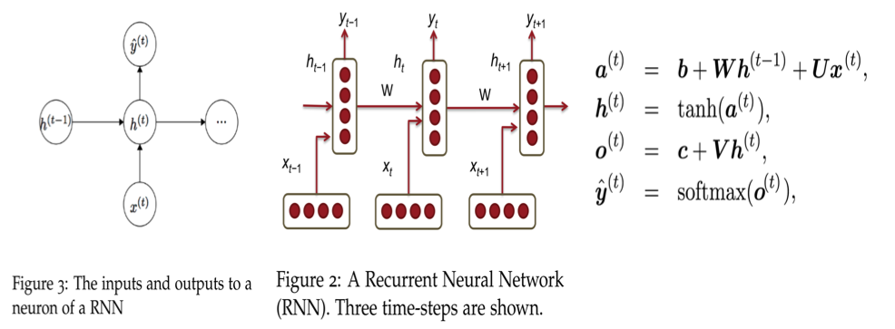
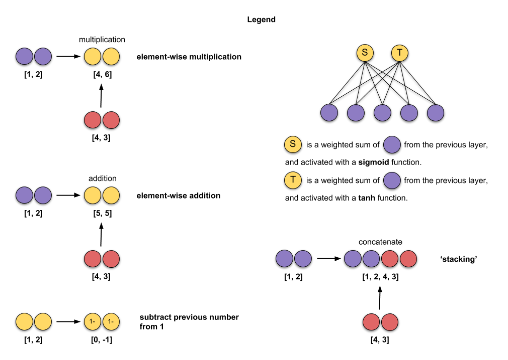
https://towardsdatascience.com/animated-rnn-lstm-and-gru-ef124d06cf45
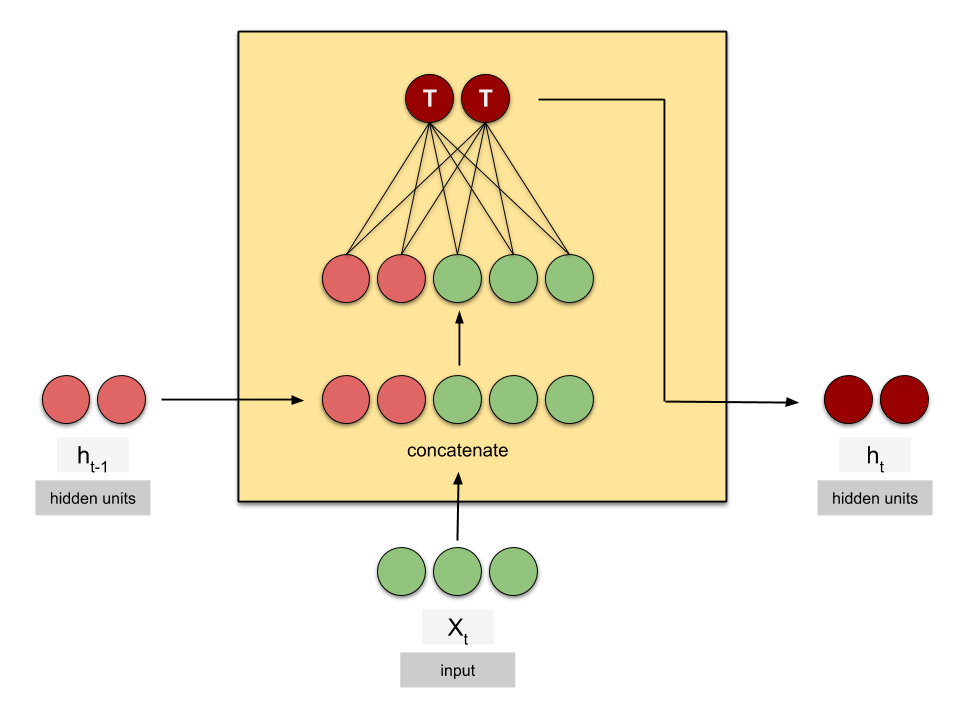
Under the hood: LSTMs¶
Long Short Term Memory networks

http://colah.github.io/posts/2015-08-Understanding-LSTMs/
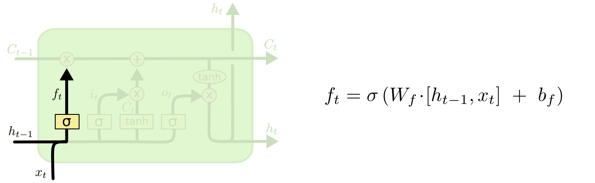

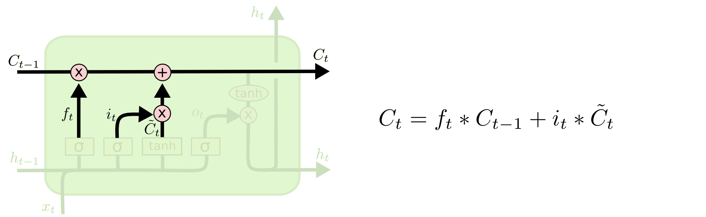
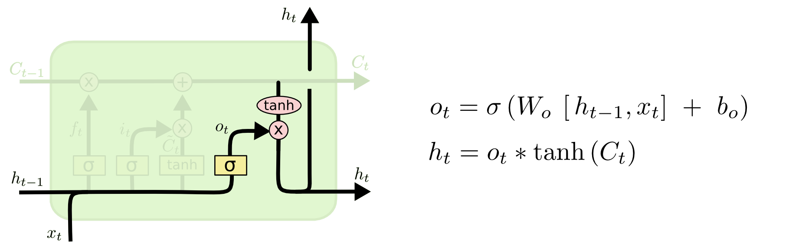

Under the hood: GRU¶

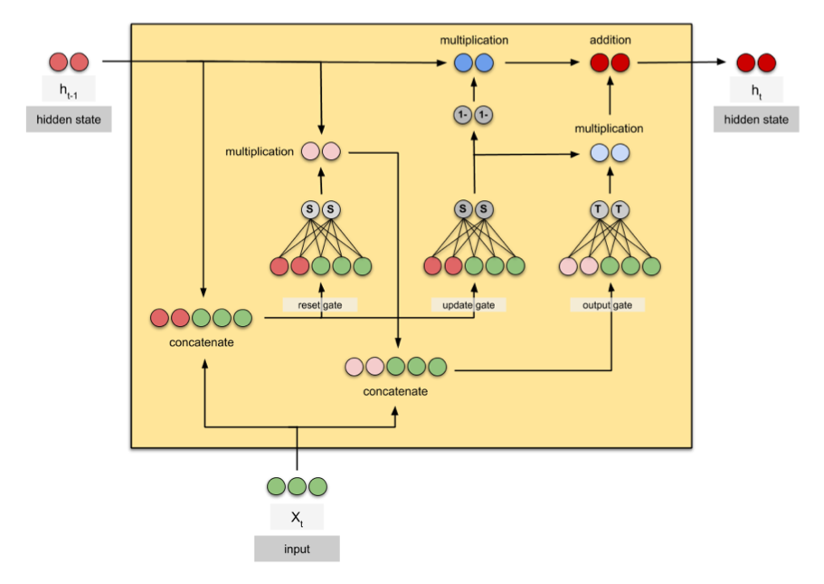

Practical PyTorch: Classifying Names with a Character-Level RNN
We will train a basic character-level RNN to classify words. It reads words as a series of characters - outputting a prediction and “hidden state” at each step, feeding its previous hidden state into each next step. We take the final prediction to be the output, i.e. which class the word belongs to.
Specifically, we’ll train on a few thousand surnames from 18 languages of origin, and predict which language a name is from based on the spelling.
https://github.com/spro/practical-pytorch/blob/master/char-rnn-classification/char-rnn-classification.ipynb
Exercise: Sentiment analysis on movie reviews¶
The sentiment labels are:
0 - negative
1 - somewhat negative
2 - neutral
3 - somewhat positive
4 - positive
https://www.kaggle.com/c/sentiment-analysis-on-movie-reviews/data